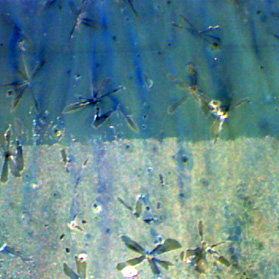
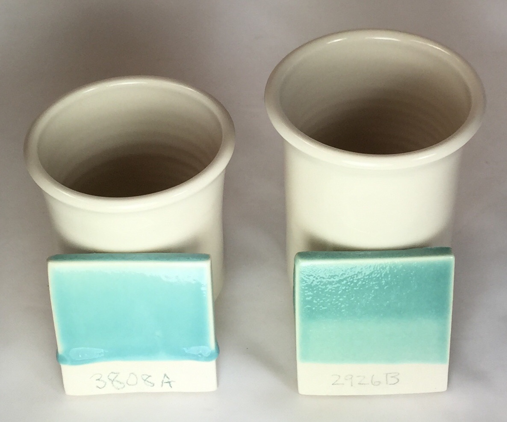
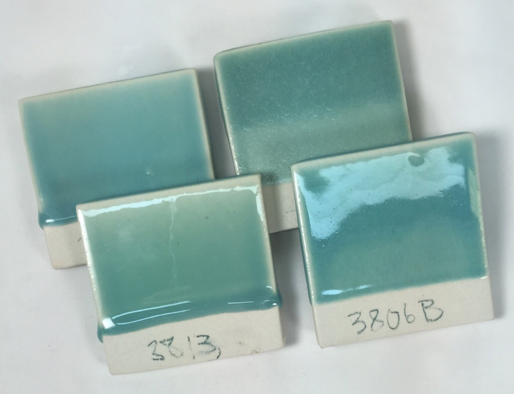
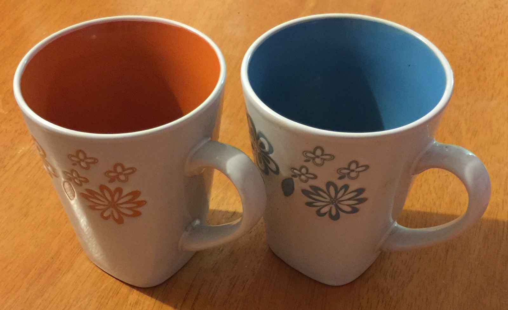
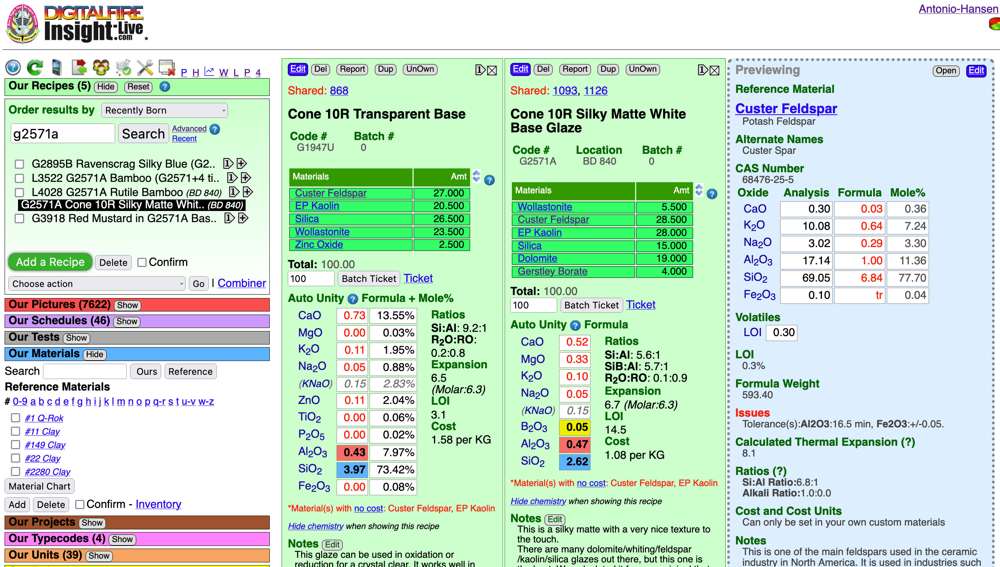
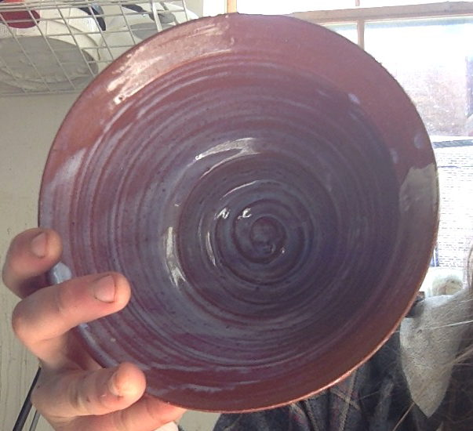
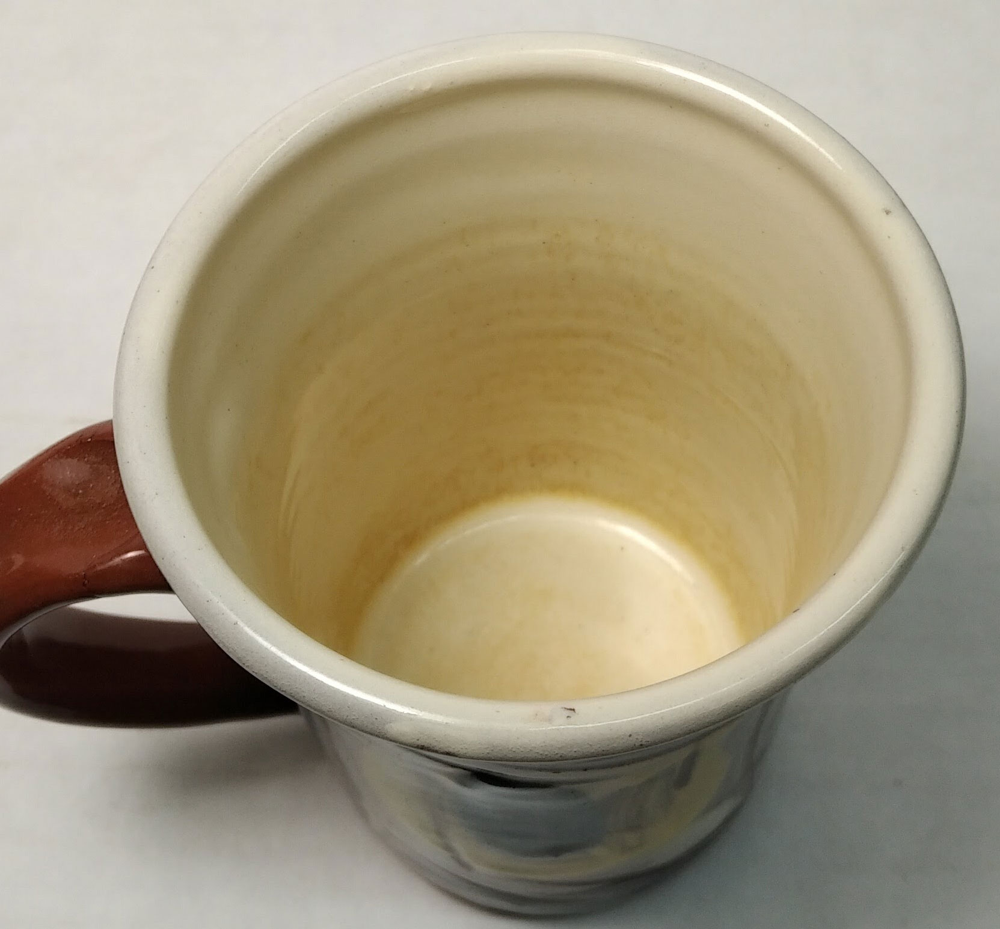
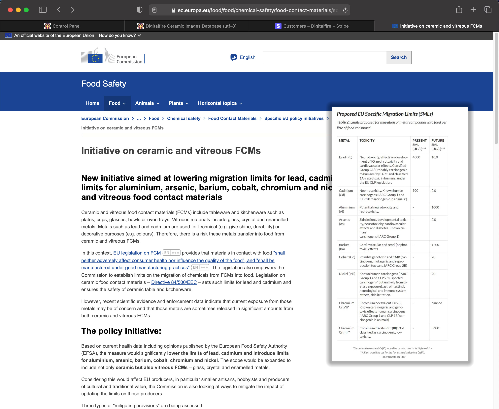

Leaching
Ceramic glazes can leach heavy metals into food and drink. This subject is not complex, there are many things anyone can do to deal with this issue
Key phrases linking here: leaching, leached - Learn more
Details
Ceramic glazes are not as universally inert and stable as many people think. All are slightly-soluble and will thus leach to some extent, even if minute, into food and liquids they come into contact with. However some glazes are dramatically more soluble than others. Glazes can be leached by acids and bases. Highly susceptible ones (e.g. metallics) will react to overnight leaching tests by changing color (different colors for bases and acids).
It is common for leaching glazes to suffer from more than one risk factor. It is also common to find leaching glazes in use by practitioners and educators who have cultivated a deliberate lack of awareness on this subject. The subject of leaching and glaze safety spans a range of concerns from technical (e.g. glaze chemistry) to simple common sense (e.g. contains high percentages of metal oxides or is not melting well). Obviously, there is more concern if the glaze will be exposed to a hot acidic or caustic liquid for lengthy periods than if the vessel will simply be used to serve cold food. There is a need for common sense about recipes, we embody this by the term “limit recipe”.
At first it might seem logical to send your glazes for testing at a lab. However is this really necessary? Suppose you are using a liner glaze (that you make, without colorants) and it contains no materials that could release barium, lead or lithium. And, suppose it is melting well, not crazing and wears well. Why bother having it tested for leaching?
What if you are using a commercial transparent or white liner glaze, one with an unknown recipe? The chances are very good it too is safe. But what if it is brightly colored? The bottle says it is safe but you know it contains heavy metals (because that is the only way to make bright colors)! How confident can you be it is really safe? It is true that most commercial glazes employ ceramic stains, not raw metal oxides and carbonates. It is true that stains are certainly more stable. But what if a glaze requires 20% or even more stain to achieve the color, how is it possible that it will not leach? You might find all of this worrying enough to avoid these on food surfaces.
Potters have become increasingly aware of potential leaching in ceramic glazes. So have consumers. Assuring that glazes are not leaching metals is about having a comfort zone, a feeling that you are making ware that has a margin of safety. Having a good base transparent and matte recipe and adding your own stains, opacifiers and variegators is a way to achieve this. And what if the only way to get a certain color is by adding 20% stain? You are likely not going to do that! However being able to achieve good color with only 5% stain is evidence of having done your best. Confirmation with some simple leaching tests will give you a good feeling about the ware you are making.
Chemistry, a Way to Get More Insight
Glaze chemistry enables you to look at a glaze as a collection of oxides rather than just a recipe of materials (Insight-live, for example, automatically calculates and displays the oxide formula of glaze recipes). Fired glazes are what they are because of their chemistry more than anything else. Imbalances in the oxide formula can help explain a tendency to leach. Likewise a balanced oxide formula will suggest stability and the ability to host a colorant. The term 'balance' often simply refers to a glaze having oxide quantities in keeping with typical target (or limit) formulas for the temperature range. Balance almost always means there is adequate SiO2 and Al2O3, it almost never means it is flux-saturated and of high melt fluidity. Limit formulas are about what mixes of oxides melt well and form a good glass (not whether they are food safe). That being said, if a glaze melts well and forms a good glass it is less likely to be leachable.
As noted, glaze bases can be inherently safe simply because they are made from nothing but non-hazardous materials. Thus, even if they do not melt sufficiently, it does not matter. The opposite is also the case, glaze bases can be inherently leachable when they are over melting (most often, as already noted, when there is inadequate SiO2 or Al2O3). However, in either case, leaching is almost guaranteed if metal oxides are added. As already noted, stable glaze bases can even be made unstable by additions of excessive percentages of colorant.
While it is true that a recipe containing significant lead, barium or metal oxide, can, by careful engineering of the oxide balance and controlled firing, be made safe against leaching, this is not typically within the reach fo the average potter or small manufacturer. Speed of kiln cooling is another factor: It is common for metal stained glazes to crystallize if cooled slowly, those crystals can be leachable.
The best prevention for leaching on food surfaces is to use non-coloured glazes of known composition. Simple leach-testing (with acids and bases) is also a no-brainer. And enough awareness of chemistry and materials to recognize a glaze that is likely to be stable.
Related Information
Copper can destabilize a glaze and make it soluble

This picture has its own page with more detail, click here to see it.
A closeup of a glossy Cone 6 glaze having 4% added copper carbonate. The bottom section has leached in lemon juice after 24 hours. This photo has been adjusted to spread the color gamut to highlight the difference. The leached section is now matte.
Commercial supposedly safe glazes leaching. A liner glaze is needed.

This picture has its own page with more detail, click here to see it.
Three cone 6 commercial bottled glazes have been layered. The mug was filled with lemon juice overnight. The white areas indicate leaching has occurred! Why? Glazes need high melt fluidity to produce reactive surfaces like this. While such normally tend to leach metals, supposedly the manufacturers were able to tune the chemistry enough to pass tests. But the overlaps interact, like drug interactions they are new chemistries. Cobalt is clearly leaching. What else? We do not know, these recipes are secret. It is better to make your own transparent or white liner glaze (either as a dipping glaze or brushing glaze). Better to know the recipe to have assurance of adherence to basic recipe limits.
Are commercial glazes really guaranteed food safe? When manufacturers claim adherence to standards like ASTM D-4236 what are they saying? The small amounts of liquid glazes are safe for the artist to brush on. They are not making claims about leaching on finish ware.
Commercial glazes on decorative surfaces
Your own on food surfaces

This picture has its own page with more detail, click here to see it.
These cone 6 porcelain mugs are hybrid. Three coats of a commercial glaze painted on the outside (Amaco PC-30) and my own liner glaze, G2926B, poured in and out on the inside. When commercial glazes (made by one company) fit a stoneware or porcelain (made by another company) it is by accident, neither company designed for the other! For inside food surfaces make or mix a liner glaze already proven to fit your clay body, one that sanity-checks well (as a dipping glaze or a brushing glaze). In your own recipes you can use quality materials that you know deliver no toxic compounds to the glass and that are proportioned to deliver a balanced chemistry. Read and watch our liner glazing step-by-step and liner glazing video for details on how to make glazes meet at the rim like this.
Two base clear glazes with 2% copper:
One is bubbling and one is not.

This picture has its own page with more detail, click here to see it.
By itself, without copper, the G2926B recipe (right) produces a better and more durable glass (comparing the cups in the back). But a 2% copper addition, front, turns its surface to a mass of unhealed bubble-escapes. The G3808A recipe, on the left, develops much more melt fluidity, the extra mobility enables the bubbles, created by the decomposing copper, to coalesce, grow, break at the surface and heal before the melt stiffens too much.
Copper does not necessarily cause glazes to leach if used in moderate amounts

This picture has its own page with more detail, click here to see it.
These are four cone 6 glazes of diverse chemistry. They have varying melt fluidities. They are soaked (halfway up) in lemon juice overnight. None show any evidence of surface changes. All contain 2% copper carbonate. If the copper was increased, especially to the point of going metallic or crystallizing, the leaching test would produce different results (especially on the ones that are running, they lack SiO2 and Al2O3). So, if you use copper sensibly (in moderate amounts), there is a good chance of making a glaze that resists leaching.
How much rutile can a glaze take before it becomes unstable?

This picture has its own page with more detail, click here to see it.
The 80:20 base GA6-A Alberta slip base becomes oatmeal when over saturated with rutile or titanium (left: 6% rutile, 3% titanium; right: 4% rutile, 2% titanium). That oatmeal effect is actually the excess titanium crystallizing out of solution into the melt as the kiln cools. Although the visual effects can be interesting, the micro-crystalline surface is unpleasant to touch and susceptible to cutlery marking and leaching (not as stable or durable as in glazes which are pure amorphous glass). For functional ware, rutile glazes are among the most troublesome to keep consistent, one way of avoiding problems is keeping the percentage as low as possible while still getting the desired variegation (of course that will vary depending on the melt fluidity of the glaze, more highly fluid ones can handle more rutile or titanium).
Transparent inner glaze over an encapsulated stained engobe

This picture has its own page with more detail, click here to see it.
Encapsulated stains can reach their limits in a glaze host at cone six and begin to dissolve and decompose. That is an obvious problem on a food surface. But in a less fluid underglaze they can survive longer. The bright orange color on the left was likely done this way. The transparent over glaze is isolating it from any contact with food or drink. However people are more wary of the risk of glazes leaching heavy metals and having bright colours on food surfaces may not send the right message.
An extremely runny glaze at cone 6. The runniness is manageable, it has other issues!

This picture has its own page with more detail, click here to see it.
This recipe melts to such a fluid glass because of its high sodium and lithium content (coupled with low silica levels). Reactive glazes like this produce interesting visuals but these come at the obvious cost of being runny like this. But this problem can be managed with glaze technique, a catch glaze on the outside and a liner glaze (to prevent the formation of a lake on the inside bottom (which leads to glaze compression problems). A bigger problem is that drippy glazes like this often calculate to an extremely high thermal expansion. That means food surfaces will craze badly. Another issue that underscores the value of using a liner glaze: Low silica often contributes to leaching of the lithium and any heavy metals present in the colorants.
What can you do using glaze chemistry? More than you think!

This picture has its own page with more detail, click here to see it.
There is a direct relationship between the way ceramic glazes fire and their chemistry. These green panels in my Insight-live account compare two glaze recipes: A glossy and matte. Grasping their simple chemistry mechanisms is a first step to getting control of your glazes. To fixing problems like crazing, blistering, pinholing, settling, gelling, clouding, leaching, crawling, marking, scratching, powdering. To substituting frits or incorporating available, better or cheaper materials while maintaining the same chemistry. To adjusting melting temperature, gloss, surface character, color. And identifying weaknesses in glazes to avoid problems. And to creating and optimizing base glazes to work with difficult colors or stains and for special effects dependent on opacification, crystallization or variegation. And even to creating glazes from scratch and using your own native materials in the highest possible percentage.
What happens when ceramic glazes lack Al2O3?

This picture has its own page with more detail, click here to see it.
This happens. They are glossy, but lack thickness and body. They are also prone to boron blue clouding (micro crystallization that occurs because low alumina melts crystallize much more readily on cooling). Another problem is lack of resistance to wear and to leaching (sufficient Al2O3 in the chemistry is essential to producing a strong and durable glass). This is a good example of the need to see a glaze not just as a recipe but as a chemical formula of oxides. The latter view enables us to compare it with other common recipes and the very low Al2O3 is immediately evident. Another problem: Low clay content (this has only 7.5% kaolin) creates a slurry that is difficult to use and quickly settles hard in the bucket.
A high feldspar glaze is settling, running and crazing. What to do?

This picture has its own page with more detail, click here to see it.
The original cone 6 recipe, WCB, fires to a beautiful brilliant deep blue green (shown in column 2 of this Insight-live screen-shot). But it is crazing and settling badly in the bucket. The crazing is because of high KNaO (potassium and sodium from the high feldspar). The settling is because there is almost no clay in the recipe. Adjustment 1 (column 3 in the picture) eliminates the feldspar and sources Al2O3 from kaolin and KNaO from Frit 3110 (preserving the glaze's chemistry). To make that happen the amounts of other materials had to be juggled. But the fired test revealed that this one, although very similar, is melting more (because the frit releases its oxides more readily than feldspar). Adjustment 2 (column 4) proposes a 10-part silica addition. SiO2 is the glass former, the more a glaze will accept without losing the intended visual character, the better. The result is less running and more durability and resistance to leaching.
Liner glaze is coffee-staining and leaching after two years. Is it toxic?

This picture has its own page with more detail, click here to see it.
This is a cone 04 terra cotta piece. The coffee stain cannot be removed because the coffee has also leached off the surface gloss. Glazes are glass. Glass is leachable if the chemistry is out-of-balance. So is this glaze poisoning the user? No, it has an insurance policy. It is transparent, made from a mix of two frits (Ferro 3124, 3134) plus kaolin and silica. The recipe contains no heavy metal colorants or pigments and no toxic fluxes like lithium or barium. But the body is red, how can the glaze be white? A white porcelain-like engobe layer was applied at the leather hard stage and it was clear-glazed after bisque. The fix: The predominant frit, 3134, has almost no Al2O3 (the oxide most important in producing durability). So I increased the Al2O3 (doing the chemistry in my Insight-live.com account). I also began firing one cone higher, at cone 03.
Metal leaching from ceramic glazes: Lab report example and a better way

This picture has its own page with more detail, click here to see it.
This lab is certified by the US Department of Environmental Protection (DEP) for drinking water and wastewater analysis. They also provide pottery glaze leaching analyses (an acid solution is kept in contact with the glaze and then analysed for trace levels of specific metals). Each suspected metal to be tested for entails a separate charge ($30-60 in this case, could be less for you). That means that testing one glaze for several metals could cost $200. How to make sense of these numbers? Google the term: "heavy metals drinking water standards", and click "Images" to find charts with lots of data. Searching pages for this term will find books having detailed sections on each of the metals. Typically you are only interested in one metal in a specific glaze (often cobalt or manganese). There are ways to sleep better (about the likelihood your glazes are leaching metals) if you cannot do this: Do a simple GLLE test. And avoid online trafficking in hazardous recipes. Better to find a quality base glaze (matte and transparent) that works well on your clay body. Then add colorants, opacifiers and variegators; but doing so in a conservative manner. And use a liner glaze on food surfaces.
EU Food Contact testing limits are changing - 2021

This picture has its own page with more detail, click here to see it.
The SMGs (specific migration limits) on lead and cadmium are being reduced and requirements added for compliance on other metals. Testing must be in accordance with European Standards: EN 1388-1 and EN 1388-2. The migration of elements into a food simulant (4% acetic acid) is measured, by accredited methods according to EN ISO/IEC 17025:2005, using FAAS (flame atomic absorption spectrometry). It is a rapid and generally robust interference-free technique having simple external standardization with matrix-matched solutions. Exposure assessment is performed taking into account actual reference doses introduced by the European Food Safety Authority (EFSA) and the Joint FAO/WHO Expert Committee on Food Additives (JECFA). How can one deal with this? Check the limit recipe, leaching and toxicity topics. For maximum assurance, develop your own base recipe and variegate that.
Links
| Articles |
Are Your Glazes Food Safe or are They Leachable?
Many potters do not think about leaching, but times are changing. What is the chemistry of stability? There are simple ways to check for leaching, and fix crazing. |
| Articles |
Attack on Glass: Corrosion Attack Mechanisms
Max Richens outlines the various mechanisms by which acids and bases can dissolve glass and glazes. He provides some information on stabilizing glazes against attack. |
| Articles |
Having Your Glaze Tested for Toxic Metal Release
Having Your Glaze Tested for Metal Release |
| Articles |
Is Your Fired Ware Safe?
Glazed ware can be a safety hazard to end users because it may leach metals into food and drink, it could harbor bacteria and it could flake of in knife-edged pieces. |
| Articles |
Leaching Cone 6 Glaze Case Study
An example of how we can use INSIGHT software to determine of a glaze is likely to leach |
| Articles |
Are You in Control of Your Production Process?
Potters often run operations that are on the edge of control tolerating production and ware problems that industry would not. However ethics will sooner or later demand a better knowledge of process and materials. |
| Glossary |
Water in Ceramics
Water is the most important ceramic material, it is present every body, glaze or engobe and either the enabler or a participant in almost every ceramic process and phenomena. |
| Glossary |
Glaze Durability
Ceramic glazes vary widely in their resistance to wear and leaching by acids and bases. The principle factors that determine durability are the glaze chemistry and firing temperature. |
| Glossary |
Limit Formula
A way of establishing guideline for each oxide in the chemistry for different ceramic glaze types. Understanding the roles of each oxide and the limits of this approach are a key to effectively using these guidelines. |
| Glossary |
Toxicity
Common sense can be applied to the safe use of ceramic materials. The obvious dangers are breathing the dust and inhaling the fumes they produce during firing. Here is a round-up of various materials and their obvious hazards. |
| Glossary |
Restaurant Ware
If you are a potter and want to make restaurant ware, read this. Many of the things you already think you know will mislead you in this type of venture. |
| Glossary |
Metal Oxides
Metal oxide powders are used in ceramics to produce color. But a life time is not enough to study the complexities of their use and potential in glazes, engobes, bodies and enamels. |
| Glossary |
Ceramic Glaze Defects
Ceramic glaze defects include things like pinholes, blisters, crazing, shivering, leaching, crawling, cutlery marking, clouding and color problems. |
| URLs |
http://insight-live.com/insight/quotes.php?keyword=safety|leach
What people are saying about leaching and safety in glazes |
| URLs |
https://www.astm.org/d4236-94r21.html
ASTM D-4236 - Standard Practice for Labeling Art Materials for Chronic Health Hazards - It is not what you think! A standard that "applies exclusively to art materials packaged in sizes intended for individual users of any age or those participating in a small group". It "concerns those chronic health hazards known to be associated with a product or product component(s) when it is present in a physical form, volume, or concentration that in the opinion of a toxicologist has the potential to produce a chronic adverse health effect". The word "toxicity" is not mentioned on the page nor any methods for determining such. Furthermore, the labelling refers to hazards to which the potter is exposed in applying the glaze to the ware, long term, in small hobby quantities. IT DOES NOT ADDRESS leaching hazards the ware presents to users of the pottery. Even then, the standard states that "it is the RESPONSIBILITY OF THE USER ... to establish appropriate safety, health, and environmental practices ... based upon knowledge that exists in the scientific and medical communities". It also admits that "since knowledge about chronic health hazards is incomplete and warnings cannot cover all uses of any product, it is not possible for precautionary labelling to ensure completely safe use of an art product." It is interesting that one manufacturer displays this warning on pages relating to dipping glazes and accessory products (which are used by manufacturers): "Safety Warning: Tableware producers must test all finished ware to establish dinnerware status, due to possible variations in firing temperature and contamination." This warning does not appear on brushing glazes, even the reactive metal-saturated ones that potters and hobbyists use! |
| Projects |
Hazards
|
| Hazards |
Copper Oxide and Carbonate
|
| Typecodes |
Ceramic Testing Labs
There is much physical testing you can do using simple procedures and equipment (as described on this site) to compare ceramic bodies, glazes, engobes, etc. Such testing, for example, shows you that one clay is more plastic than another, one glaze has more melt fluidity than another or one engobe has a higher firing shrinkage than another. But if you want data to represent the absolute value of a specific property (e.g. coefficient of thermal expansion, chemical or mineralogical analysis) you may need the services of a testing lab. Most labs have grown over time and offer a wide array of services for many industries, so it can be difficult to locate the specific test you need. Effectively using their services is about knowing exactly what you want, finding their sample preparation instructions for the specific test needed and then following these closely to get the desired result at the expected cost. Having just one test done to answer one question is not typical, normally one has a specific test done on multiple samples, learning to interpret the data over time. If you want to test for leaching in a ceramic glaze consider carefully if you will be able to interpret the results they give you. There is a good chance they will give you a report full of numbers but decline to make any technical assessments or interpretation regarding it. Read our articles on this (listed below) for alternatives that may be more practical. |
 PayPal | No tracking, No ads, No paywall, No transient content! Just organized, concise information constantly updated and improved. Was this helpful? Consider supporting me. |
| By Tony Hansen Follow me on        |  |
Got a Question?
Buy me a coffee and we can talk 

https://digitalfire.com, All Rights Reserved
Privacy Policy